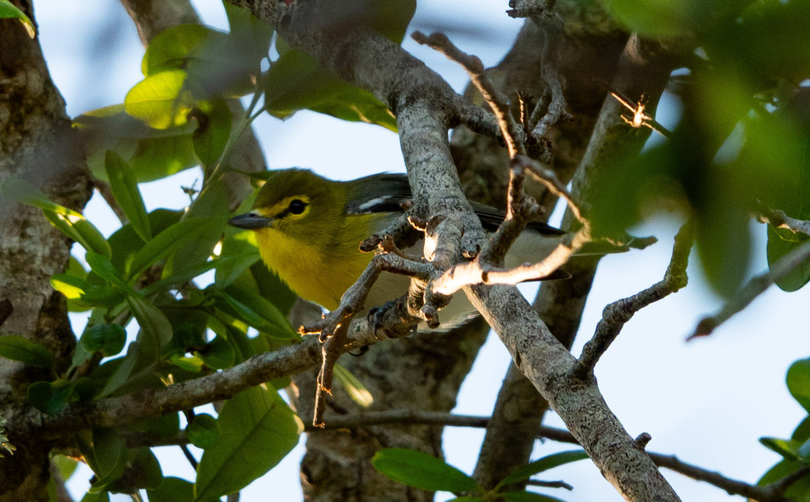

- The most colorful vireo in eastern North America — bright yellow throat, yellow 'spectacles' around the eyes, olive back, and two crisp white wingbars. Heavier-billed and far more deliberate in its movements than any warbler.
- Unlike the park's year-round resident birds, this vireo is a strict migrant in the Bradenton area, passing through Palma Sola twice a year — once in spring (late March to early April) heading north to breed, and again in fall (September to October) heading south to winter in Mexico and Central America.
- While they share similar colors with some spring warblers, behavior gives them away: warblers flit and dart constantly, while Yellow-throated Vireos move slowly and methodically through the upper branches, pausing at each perch to inspect bark and foliage.
- During their spring stopover, males sing from the treetops — a slow, lazy series of raspy two-syllable phrases with long pauses in between, often transcribed as 'three-EIGHT' or 'CRE-atte.'
A chunky, short-tailed songbird with a thick, slightly hooked bill. Bright yellow throat and breast, yellow eye-ring and lores forming bold 'spectacles,' olive-green head and back, gray rump, and two crisp white wingbars on gray wings. White belly and undertail. Sexes look alike.
Most often confused with the Pine Warbler, which shares yellow-and-white underparts and wingbars. Key differences: the vireo's bill is noticeably thicker and slightly hooked; its yellow throat is unstreaked (Pine Warblers show faint dusky streaking on the sides); and its movements are slower and more deliberate.
Song is a slow series of short, burry two- and three-syllable phrases with rising and falling inflection, delivered at a leisurely pace with pauses between phrases — lower-pitched and huskier than the Red-eyed or Blue-headed Vireo's song. A common rendition is transcribed as 'three-EIGHT' or 'CRE-atte.' Males sing persistently during spring migration. Females produce a harsh scolding chatter during aggressive encounters.
Search the middle and upper canopy, especially in the interior of trees on bare branches rather than leaf tips. The combination of unstreaked bright yellow throat, matching yellow spectacles, two white wingbars, and a stout hooked bill is definitive. If the bird is moving at all, it will be doing so slowly — this is not a warbler dart.
Primarily insects: caterpillars, moths, butterflies, beetles, leafhoppers, aphids, cicadas, dragonflies, and many others gleaned from bark, twigs, and foliage. Supplements with berries, especially in fall during migration.
Scan the canopy and mid-story of the park's largest deciduous trees, particularly the interior branches rather than the outer foliage. Slow-moving and easy to overlook despite its bright coloration — listen first for the slow, burry song or the rustle of deliberate foraging, then trace the sound upward. Usually encountered singly.
A spring and fall migrant in the Bradenton area. Spring birds move through primarily in late March and early April; fall migrants pass through September into October. Most active during morning hours. Migrates at night, so freshly arrived birds are most visible in early morning at stopover sites.
Observe and enjoy.

- © Rob Carr (CC-BY-NC), via iNaturalist